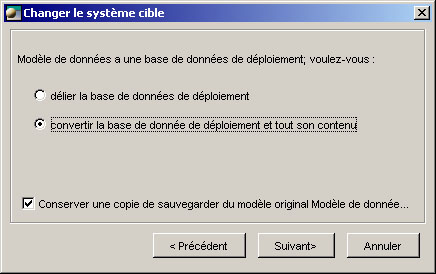
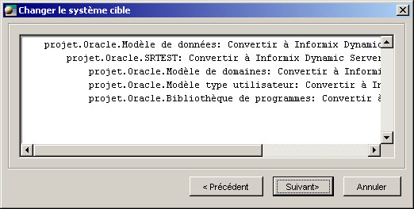

Changement de système cible
Il peut arriver qu'un modèle développé pour un certain système cible puisse être réutilisé sous un autre système cible.
ModelSphere peut migrer un modèle vers un autre système de cible, en assurant la correspondance des types de données.
Pour appeler la fonctionnalité de changement de système cible, Cliquez-droit sur l'icone d'un  modèle de données,
d'une
modèle de données,
d'une  base de données, un
base de données, un  modèle de type de l'utilisateur ou d'une
modèle de type de l'utilisateur ou d'une  bibliothèque d'opération dans l'explorateur et choisissez 'Changer le système cible...' dans le menu contextuel.
bibliothèque d'opération dans l'explorateur et choisissez 'Changer le système cible...' dans le menu contextuel.
Une interface d'assistance va apparaître.

La première page de l'interface vous demande de sélectionner le système cible de destination.
Cliquez sur le bouton pour le sélectionner parmi la liste des systèmes cibles.
Cliquez sur Suivant pour continuer.

À cette étape, vous aurez à détermier si vous désirez convertir uniquement ce module (ici un modèle de donnée) ou tout le déploiement de la base de données.
Cliquez sur Suivant pour continuer.

Vous aurez ensuite à décider si vous désirez aussi convertir les sous-modèles et si vous voulez utiliser ou non les items communs actuels.
Cliquez sur Suivant pour continuer.

Un rapport concernant les modifications qui seront apportées est affiché avant le déclenchement de la conversion. Cliquez sur Suivant pour la conversion.